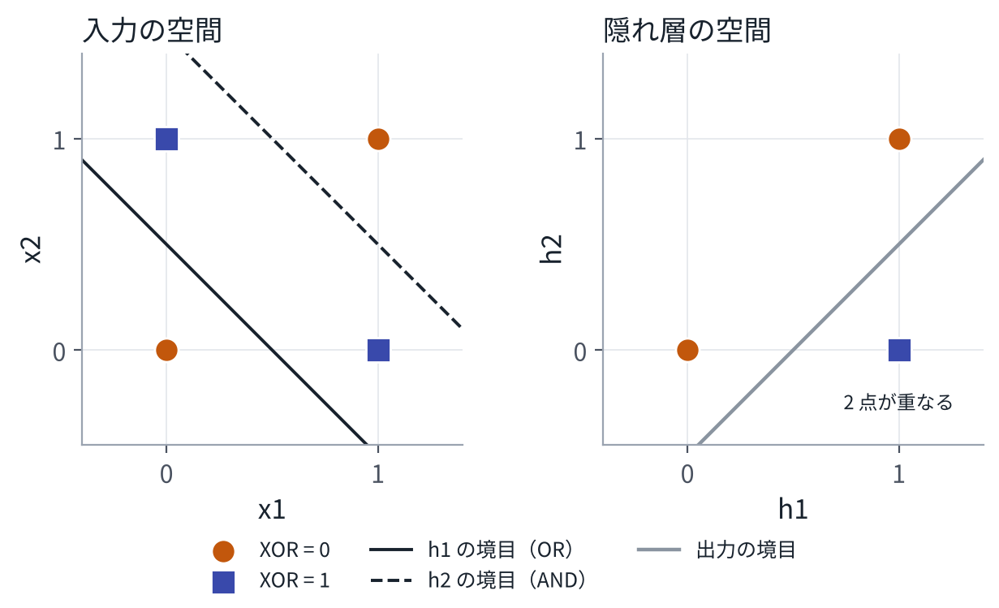
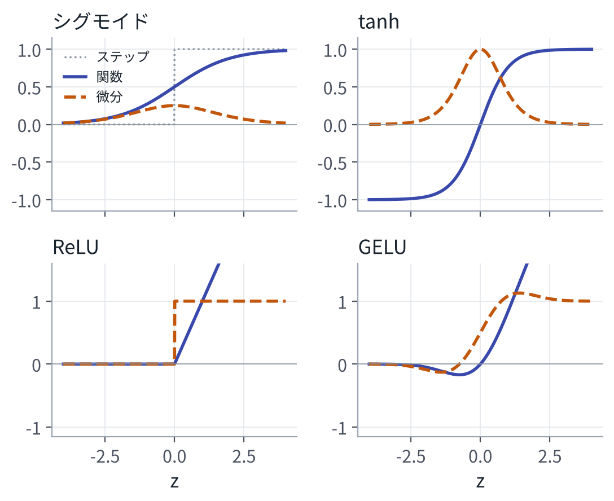
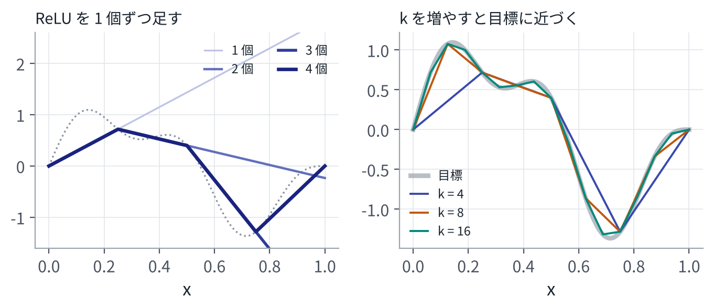
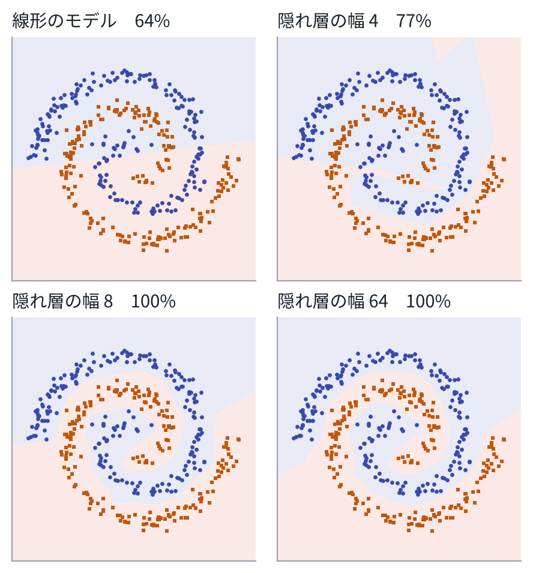
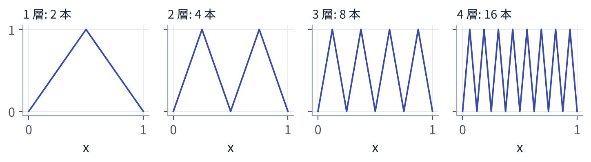
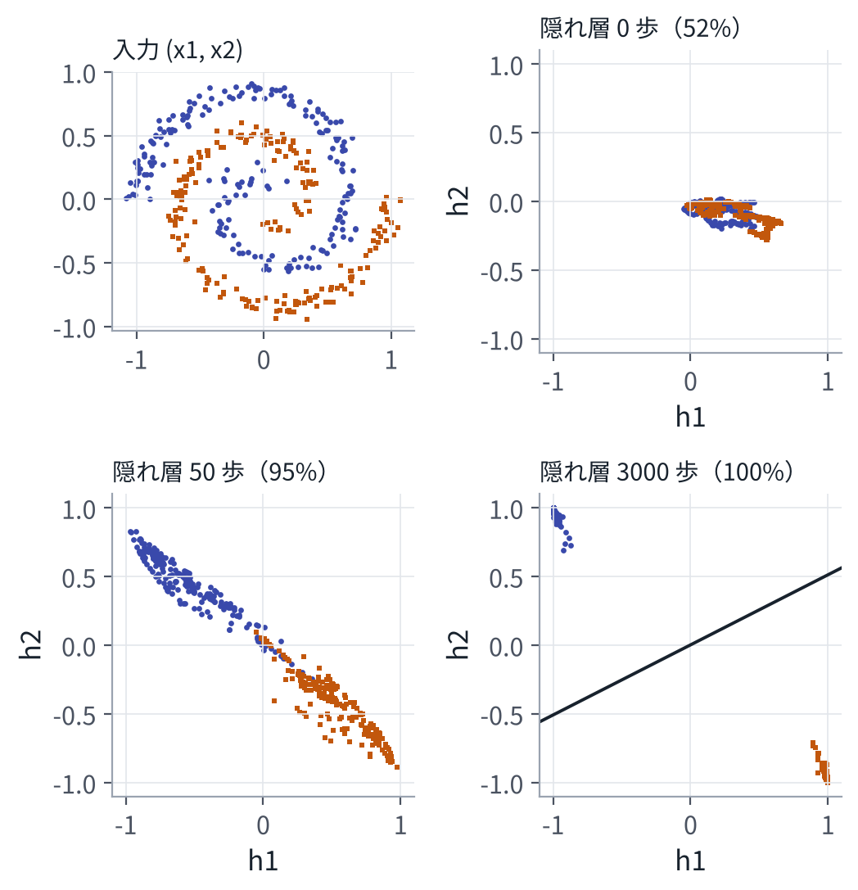

目次
1XOR を 2 層で解く
3.2 節の図 3 で、XOR の点は直線 2 本で分けられた。そこで、直線 1 本ずつを 1 個のニューロンに受け持たせ、その 2 つの出力を、もう 1 個のニューロンでまとめる。
\[ \begin{aligned} h_1 &= \mathbb 1[x_1 + x_2 - 0.5 \ge 0]\\ h_2 &= \mathbb 1[x_1 + x_2 - 1.5 \ge 0]\\ y &= \mathbb 1[h_1 - h_2 - 0.5 \ge 0] \end{aligned} \]\(h_1\) は OR、\(h_2\) は AND で、\(y\) は「OR だが AND でない」、つまり XOR である。4 つの入力について計算すると、次の表になる。
| 入力 \((x_1, x_2)\) | 隠れ層 \((h_1, h_2)\) | 出力 \(y\) |
|---|---|---|
| (0, 0) | (0, 0) | 0 |
| (0, 1) | (1, 0) | 1 |
| (1, 0) | (1, 0) | 1 |
| (1, 1) | (1, 1) | 0 |
大事なのは、隠れ層で点の位置が変わることである。入力の空間で対角に分かれていた \((0,1)\) と \((1,0)\) が、隠れ層の空間では同じ点 \((1, 0)\) に移る。すると、残りの 2 点 \((0,0)\) と \((1,1)\) と、1 本の直線で分けられる。

3.2 節の最後に挙げた「特徴を作ってからニューロンに入れる」方法の、特徴の部分もニューロンにしたものと言える。ここでは重みを手で入れたが、3.4 節の逆伝播を使えば、この重みもデータから学習できる。
2多層パーセプトロン（MLP）の形
1 つの層は、「1 次式のあとに、決まった非線形の関数を通す」計算である。ニューロンが \(m\) 個並んだ層は、重みを \(m\) 行の行列 \(W\) に、バイアスを長さ \(m\) のベクトル \(b\) にまとめて、次のように書ける。
\[ h = \sigma(W x + b) \]\(\sigma\) は活性化関数で、ベクトルの成分ごとに働く。\(W\) の \(j\) 行目が、\(j\) 番目のニューロンの重み \(w_j^\top\) である。これを重ねる。隠れ層が 2 つのネットは、次のとおりである。
\[ \begin{aligned} h_1 &= \sigma(W_1 x + b_1)\\ h_2 &= \sigma(W_2 h_1 + b_2)\\ z &= W_3 h_2 + b_3 \end{aligned} \]最後の \(z\) はロジットで、2 章と同じく softmax で確率にし、交差エントロピーで学習する。途中の \(h_1, h_2\) が、ネットが自分で作る特徴である。この形を多層パーセプトロン（MLP）、または全結合ネットという。名前に「パーセプトロン」が残っているが、活性化関数はしきい値ではなく、なめらかな関数か ReLU を使う（理由は次の節）。
重みの数は、層ごとに「入力の数 × 出力の数 ＋ 出力の数」である。演習の 2 → 64 → 64 → 2 のネットなら、次のようになる。
\[ \begin{aligned} &(2\cdot 64 + 64) + (64 \cdot 64 + 64)\\ &\quad + (64\cdot 2 + 2) = 4482 \end{aligned} \]VLA の重みは数億〜数十億個あるが、数え方は同じである。Transformer の中にも、トークンごとに通す 2 層の MLP が入っている（5 章）。
3活性化関数がないと、層は 1 つと同じ
\(\sigma\) を外すと、何層重ねても 1 次式にしかならない。2 層で確かめる。
\[ \begin{aligned} &W_2 (W_1 x + b_1) + b_2\\ &\quad = (W_2 W_1)\, x + (W_2 b_1 + b_2) \end{aligned} \]右辺は、重み \(W_2 W_1\)、バイアス \(W_2 b_1 + b_2\) の 1 層である。3 層以上でも同じで、境目は直線のままになる。演習では、乱数で作った 2 層の計算と、まとめた 1 層の計算の差は、最大で \(1.8 \times 10^{-15}\)（計算の丸め誤差の大きさ）だった。非線形の \(\sigma\) をはさむことで、はじめて曲がった境目が作れる。
4活性化関数
よく使う活性化関数と、その微分を並べる。微分は、3.4 節の逆伝播で勾配を計算するときに必ず出てくる。

| 名前 | 式 | 微分 | 微分の最大 |
|---|---|---|---|
| ステップ | \(\mathbb 1[z \ge 0]\) | \(0\)（\(z \ne 0\)） | ― |
| シグモイド | \(\sigma(z) = \dfrac{1}{1+e^{-z}}\) | \(\sigma(z)\,(1 - \sigma(z))\) | 0.25 |
| tanh | \(\tanh z = 2\sigma(2z) - 1\) | \(1 - \tanh^2 z\) | 1 |
| ReLU | \(\max(0, z)\) | \(\mathbb 1[z > 0]\) | 1 |
| GELU | \(z\,\Phi(z)\) | \(\Phi(z) + z\,\varphi(z)\) | 1.13 |
\(\Phi\) と \(\varphi\) は、標準正規分布の分布関数と密度関数。微分の最大は、演習で \(z\) を細かく動かして求めた値（GELU は \(z \approx 1.41\) で 1.129）。
- ステップ関数は、ほとんどの場所で微分が 0 である。重みを少し動かしても出力が変わらないので、勾配で学習できない。パーセプトロンの学習則が勾配降下法と別の形をしていたのは、このためである。
- シグモイドは、ステップ関数をなめらかにしたもので、1986 年の逆伝播の論文で使われた[1]。微分は \(\sigma' = e^{-z}/(1 + e^{-z})^2 = \sigma (1 - \sigma)\) で、最大でも 0.25 しかない。層を通るたびに勾配が 4 分の 1 以下になりうる。これが 3.5 節の「勾配が消える」問題の一因である。
- tanh は、シグモイドを 0 を中心に引き伸ばしたもので、微分の最大は 1 である。
- ReLU は、正の側で傾きがずっと 1 で、勾配を弱めずに通す[2]。2012 年の AlexNet が使い[3]、いまも広く使われている。負の側では微分が 0 なので、入力がいつも負になったニューロンは学習しなくなる（死んだニューロン）。
- GELU は、ReLU をなめらかにしたもので[4]、Transformer の MLP でよく使われる。
5学習させると：初期値によっては失敗する
図 1 の重みは手で入れたが、同じ形のネットに、乱数の初期値から XOR を学習させてみる。2 → \(H\) → 1 のネットで、隠れ層は tanh、出力はシグモイド、損失は交差エントロピーとし、4 点をまとめた勾配降下法で 5000 歩進める（勾配の求め方は 3.4 節）。初期値を 100 通り変えて、4 点すべてを正しく分けられた回数を数えた。
| 隠れ層の数 \(H\) | 1 | 2 | 3 | 4 | 8 |
|---|---|---|---|---|---|
| 成功（100 回中） | 0 | 52 | 92 | 99 | 100 |
- \(H = 1\) は、原理的に無理である。出力は \(w^\top x + b\) の単調な関数のさらに単調な関数になり、境目は直線のままだからである。
- \(H = 2\) は、図 1 と同じ大きさで、表せるはずなのに半分近く失敗する。失敗した例では、損失が下がりきらないまま止まる。3.4 節の演習で、4 点のうち 2 点の確率が 0.5 のまま動かなくなる例（\(H = 4\) の 1 回の失敗）を見る。
- \(H\) を増やすと、ほとんど失敗しなくなる。同じ問題を解く重みの組み合わせが増え、勾配降下法がどれかにたどり着きやすくなる、と考えられる。
「表せること」と「学習で見つけられること」は別である。この区別は、次の万能近似の話でも出てくる。
6幅を広げると、何でも近づけられる（万能近似）
隠れ層が 1 つでも、ニューロンを十分に増やせば、どんな連続関数にも好きなだけ近づけられる。これを万能近似定理という。シグモイドについて Cybenko が、より一般の活性化関数について Hornik が 1989〜1991 年に示し[5][6]、その後、ReLU を含む「多項式でない」活性化関数なら成り立つことが示された[7]。
定理（くだけた形）。有界で閉じた範囲 \(K \subset \mathbb R^d\) の上の連続関数 \(f\) と、どんな小さな \(\varepsilon > 0\) に対しても、隠れ層が 1 つのネット
\[ g(x) = \sum_{j=1}^{m} c_j\, \sigma(w_j^\top x + b_j) \]で、\(K\) のすべての点で \(|f(x) - g(x)| < \varepsilon\) となるものがある（\(m\) は十分大きく取る）。
1 変数なら、自分で作れる
入力が 1 つで、活性化関数が ReLU なら、近づけるネットを具体的に書ける。区間 \([0, 1]\) を \(k\) 等分した点 \(b_0 = 0, b_1, \dots, b_k = 1\) で \(f\) の値を取り、それを結んだ折れ線を作る。\(i\) 番目の区間の傾きを \(s_i\) とすると、折れ線は次のように書ける。
\[ \begin{aligned} g(x) &= f(0) + s_0\,\mathrm{ReLU}(x - b_0)\\ &\quad + \sum_{i=1}^{k-1} (s_i - s_{i-1})\,\mathrm{ReLU}(x - b_i) \end{aligned} \]\(\mathrm{ReLU}(x - b_i)\) は、\(b_i\) より左で 0、右で傾き 1 の関数である。これに係数 \(s_i - s_{i-1}\) を掛けて足すと、\(b_i\) から右の傾きが \(s_{i-1}\) から \(s_i\) に変わる。つまり、ReLU を 1 個足すごとに、折れ線に折れ目が 1 つ増える。これは隠れ層が \(k\) 個の ReLU のネットそのものである（重み \(w_j = 1\)、バイアス \(-b_j\)）。

\(f\) が 2 回微分できるなら、折れ線との差は、区間の幅 \(h = 1/k\) を使って \(\max |f - g| \le \frac{h^2}{8} \max |f''|\) で押さえられる（直線で補間したときの誤差の公式）。\(k\) を 2 倍にすると、誤差は 4 分の 1 になるはずである。演習の結果は次のとおりで、\(k\) が大きいところでは、ちょうど 4 分の 1 ずつ減っている。
| ReLU の数 \(k\) | 誤差の最大 | 前の行との比 |
|---|---|---|
| 2 | 1.60 | ― |
| 4 | 0.72 | 2.2 分の 1 |
| 8 | 0.245 | 2.9 分の 1 |
| 16 | 0.064 | 3.8 分の 1 |
| 32 | 0.0166 | 3.9 分の 1 |
| 64 | 0.0041 | 4.0 分の 1 |
| 128 | 0.0010 | 4.0 分の 1 |
この \(f\) では \(|f''| \le 4\pi^2 + 10\pi^2 = 14\pi^2 \approx 138\) なので、\(k = 128\) の上限は \(138/(8 \cdot 128^2) \approx 0.00105\)。実際の 0.0010 はその内側にある。
定理が言わないこと
万能近似定理は、「近づける重みがある」と言うだけである。次のことは言わない。
- ニューロンがいくつ要るか。上の作り方を \(d\) 次元に広げて、各座標を \(k\) 等分した格子で区切ると、区切りの数は \(k^d\) になる。入力が画像（数十万次元）なら、この作り方は使えない。
- 学習で、その重みにたどり着けるか。前の節の XOR のように、表せても学習で見つからないことがある。
- 学習データの外でうまくいくか。1 章の過学習の話は、ネットでもそのまま当てはまる。
2 次元の例では、幅を変えると表せる形がはっきり変わる。2 本の渦巻きに沿った点を分ける問題（演習 ch03_mlp.py）では、隠れ層を 2 つにして幅を 2、4、8、64 と変えると、検証データの正解率は 50.0%、77.0%、99.7%、99.8% になった。

7深くすると何が得か
隠れ層 1 つで何でも近づけられるなら、なぜ層を深くするのか。深さが効く例を 1 つ作る。ReLU 2 個で、次の山形の関数（テント写像）が作れる。
\[ T(x) = 2\,\mathrm{ReLU}(x) - 4\,\mathrm{ReLU}\!\left(x - \tfrac12\right) \]\(0 \le x \le 1\) で考える。\(T(0) = 0\)、\(T(1/2) = 1\)、\(T(1) = 0\) で、\([0, 1/2]\) と \([1/2, 1]\) のそれぞれを、\([0, 1]\) 全体へ引き伸ばして写す。これを \(L\) 回重ねた \(T(T(\cdots T(x)))\) は、幅 2 の層を \(L\) 段重ねたネットで計算できる。重ねるたびに、各線分が \([0, 1]\) 全体へ写され、次の \(T\) で 2 つに折られるので、線分の数は 2 倍になる。

一方、隠れ層が 1 つで ReLU が \(m\) 個のネット \(g(x) = c + \sum_j a_j \mathrm{ReLU}(w_j x + b_j)\) を考える。ReLU 1 個は折れ目を 1 つしか持たないので、\(g\) の折れ目は \(m\) 個以下、線分は \(m + 1\) 本以下である。
| 段数 \(L\) | 1 | 2 | 4 | 6 | 8 |
|---|---|---|---|---|---|
| 線分の数 \(2^L\) | 2 | 4 | 16 | 64 | 256 |
| 深いネットの ReLU（\(2L\) 個） | 2 | 4 | 8 | 12 | 16 |
| 隠れ層 1 つで要る ReLU（\(2^L - 1\) 個以上） | 1 | 3 | 15 | 63 | 255 |
同じ関数を正確に作るのに、深いネットは ReLU が \(2L\) 個で済むが、隠れ層 1 つでは \(2^L - 1\) 個以上が要る。Telgarsky は、正確に作る場合だけでなく、近づけるだけでも、浅いネットには指数的に多くのニューロンが要る関数があることを示した[8]。
ただし、これは「深さで指数的に得をする関数がある」という例であって、深いネットがいつも有利だという意味ではない。実際に深いネットが使われるのは、画像や言葉のように、小さな部品を組み合わせて大きな構造ができているデータで、よく学習できることが経験的に知られているからである。深いネットを学習させる難しさと、その対策は 3.5 節で扱う。
8隠れ層は、問題を解きやすい形に並べ替える
図 2 では、隠れ層が XOR の点を並べ替えた。学習したネットでも同じことが起きているかを、渦巻きで確かめる。2 → 32 → 32 → 2 → 2 のネットで、最後の隠れ層を 2 個（tanh）にしておくと、各点がその 2 個の値の平面のどこに移ったかを描ける。最後の層は、その 2 個の値を入力にする softmax 回帰（2 章）である。

学習の前（右上）は、2 つのクラスが混ざっている。50 歩で正解率が 95% になり、3000 歩では、2 つのクラスが隠れ層の平面の反対側の角に分かれ、最後の層の直線 1 本で完全に分けられる。損失は \(0.69\)（0 歩）、\(0.15\)（50 歩）、\(2.3 \times 10^{-5}\)（3000 歩）と下がった。
まとめると、層を重ねたネットは「入力を、最後の 1 次式で扱いやすい形に変換する部分」と「最後の 1 次式」に分けて見ることができる。前の部分が作る値の並びを表現または特徴、それをデータから学習することを表現学習という。このあとの章の画像のトークン（6 章）や、画像と文を同じ空間に置く埋め込み（7 章）は、この意味での表現である。VLA は、VLM が学習した表現の上に、行動を出す部分を足したものと見ることができる（11 章）。
9演習
演習 3.3層を重ねると何ができるか
手で作る XOR、学習の成功率、活性化関数、ReLU の折れ線、テント写像、渦巻きの隠れ層を確かめる。数秒で終わる。
python3 vla_math/ch03_3_expressivity.py出力の一部：
(2) 2 → H → 1 のネットを、乱数の初期値から学習させる（各 H で初期値 100 通り、5000 歩）
隠れ層 1 個: 4 点すべて正解になったのは 0 / 100 回
隠れ層 2 個: 4 点すべて正解になったのは 52 / 100 回
隠れ層 4 個: 4 点すべて正解になったのは 99 / 100 回
(5) ReLU k 個の折れ線で、f(x) = sin(2πx) + 0.4 sin(5πx) を近づける（0 ≤ x ≤ 1）
k = 32: 誤差の最大 0.0166（前の 3.9 分の 1）
k = 64: 誤差の最大 0.0041（前の 4.0 分の 1）
(6) テント写像 T を L 回合成する（1 回の T に ReLU 2 個）
L = 8: ReLU 16 個（2 個 × 8 層）で線分 256 本. 隠れ層 1 つで同じ本数を作るには ReLU が 255 個以上必要
(7) 渦巻きを、2 → 32 → 32 → 2（tanh）→ 2 のネットで分ける
0 歩: 損失 6.90e-01、正解率 51.5%
50 歩: 損失 1.54e-01、正解率 95.0%
3000 歩: 損失 2.26e-05、正解率 100.0%
見るところ：
- (2) 表せる大きさ（\(H = 2\)）でも、学習が半分近く失敗する。幅に余裕があると失敗しにくい。
- (5) \(k\) を 2 倍にすると誤差が 4 分の 1 になる。折れ線の補間の誤差 \(h^2/8 \cdot \max|f''|\) のとおりである。
変えてみる：(7) の最後の隠れ層の活性化関数を外して（1 次式にして）、図 8 がどう変わるかを見る。(5) の目標を \(|x - 0.5|\) のように折れ目のある関数にすると、誤差の減り方が変わるかを確かめる。
10まとめ
- 隠れ層は、入力を「最後の 1 次式で分けられる配置」に並べ替える。XOR は 2 層で表せ、学習したネットでも同じことが起きる。
- 活性化関数がないと、何層重ねても 1 次式である。学習には微分が要るので、ステップ関数ではなく、シグモイド、tanh、ReLU、GELU などを使う。
- 隠れ層 1 つでも、幅を広げれば連続関数に好きなだけ近づける（万能近似）。ただし、必要な幅や、学習で見つかるかは別の問題である。
- 深さは、同じ数のニューロンで表せる形を指数的に増やすことがある。テント写像を \(L\) 回重ねた関数は、深いと \(2L\) 個、浅いと \(2^L - 1\) 個以上の ReLU が要る。
11確かめる問題
- 図 1 で、出力のニューロンを「AND だが OR でない」に変えると、何を計算するネットになるか（ヒント：そうなる入力はあるか）。
- 3 層のネット \(W_3(W_2(W_1 x + b_1) + b_2) + b_3\) が 1 層と同じになることを、重みとバイアスを具体的に書いて示せ。
- シグモイドの微分が \(\sigma(1 - \sigma)\) になることと、その最大が 0.25 であることを示せ。
- ReLU の折れ線の式で、\(\mathrm{ReLU}(x - b_i)\) の係数が「傾きの変化」\(s_i - s_{i-1}\) になる理由を説明せよ。
- 隠れ層が 1 つで ReLU が \(m\) 個のネットは、1 変数の関数として線分を \(m + 1\) 本までしか作れない。なぜか。
12読むもの
※参考文献
- D. E. Rumelhart, G. E. Hinton and R. J. Williams, "Learning representations by back-propagating errors," Nature 323, 533–536, 1986.
- V. Nair and G. E. Hinton, "Rectified linear units improve restricted Boltzmann machines," ICML, 2010.
- A. Krizhevsky, I. Sutskever and G. E. Hinton, "ImageNet classification with deep convolutional neural networks," NeurIPS 25, 2012.
- D. Hendrycks and K. Gimpel, "Gaussian Error Linear Units (GELUs)," 2016. arXiv:1606.08415
- G. Cybenko, "Approximation by superpositions of a sigmoidal function," Mathematics of Control, Signals and Systems 2, 303–314, 1989.
- K. Hornik, "Approximation capabilities of multilayer feedforward networks," Neural Networks 4(2), 251–257, 1991.
- M. Leshno, V. Ya. Lin, A. Pinkus and S. Schocken, "Multilayer feedforward networks with a nonpolynomial activation function can approximate any function," Neural Networks 6(6), 861–867, 1993.
- M. Telgarsky, "Benefits of depth in neural networks," COLT, 2016. arXiv:1602.04485
- S. J. D. Prince, "Understanding Deep Learning," MIT Press, 2023. 本の全文が公開されている。https://udlbook.github.io/udlbook/
- I. Goodfellow, Y. Bengio and A. Courville, "Deep Learning," MIT Press, 2016. 本の全文が公開されている。https://www.deeplearningbook.org/